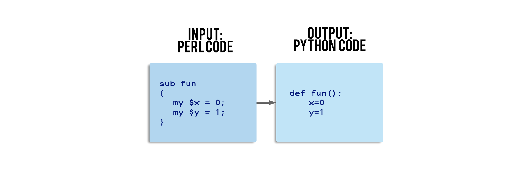
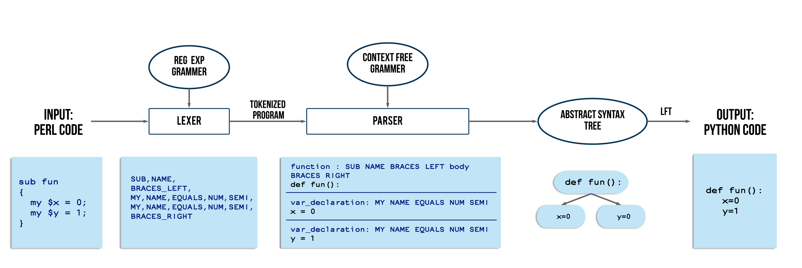

Translating Object Oriented Perl to Python
This project is an exploration of program translation using compiler design techniques. Given a syntactically correct code written in Object Oriented Perl the tool developed here programatically generates an equivalent code in Python. The Python code generated is logically identical to the input Perl code and given any input, both codes produce identical outputs. The project is implemented in python with the help of the python lex and yacc library (PLY). 
Perl concepts covered
To understand the difficulty in translation, we must first take into consideration the peculiarities of perl. Namely, the concepts of blessing , special variables, confusing aspects of scoping (local, global and my) proved to be challenging to translate as there is no one to one equivalent of aforementioned concepts in python. However with intelligent parsing, perfect translation of these concepts were achieved.The following have been covered in the scope of this project.
- Packages
- Arithmetic, relational and logical expressions
- Loops
- Hashes
- Subroutines
- Constructors, Blessing
- Scoping (local, global and my)
- Inheritance
Results
The following are the results of a few input programs the tool was tested on.Example 1
Printing the fibonacci series - demonstrating loops.Input: Perl Code
fibonacci.pl- print "12 terms of the fibonacci series\n";
- $a = 0 ;
- $b = 1 ;
- print "$a $b ";
- for ( $i = 2; $i <= 12; $i++)
- {
- $c = $a + $b;
- print "$c ";
- $a = $b ;
- $b = $c ;
- }
- print "\n";
-
Output: Python Code
fibonacci.py- str_ = lambda x: '' if x == None else str(x)
- a = None
- b = None
- c = None
- print( "12 terms of the fibonacci series\n", end='', sep='' )
- a = 0
- b = 1
- print( str_(a) + " " + str_(b) + " ", end='', sep='' )
- for i in range (2, 13, 1):
- c = a + b
- print( str_(c) + " ", end='', sep='' )
- a = b
- b = c
- print( "\n", end='', sep='' )
-
Perl Code Output
12 terms of the fibonacci series
0 1 1 2 3 5 8 13 21 34 55 89 144
Python Code Output
12 terms of the fibonacci series
0 1 1 2 3 5 8 13 21 34 55 89 144
Example 2
Getting the ara of a rectangle. Demonstrates translation packages, expressions, blessing and @INC.Server
Input: Perl Code
server.pm- package rect;
- sub new
- {
- my $class = shift;
- my $self =
- {
- length => shift,
- breadth => shift
- };
- bless($self, $class);
- return $self;
-
- }
-
- sub area
- {
- my $self = shift;
- return $self->{length} * $self->{breadth};
- }
-
- sub perimeter
- {
- my $self = shift;
- return $self->{length} * 2 + $self->{breadth} * 2;
- }
- 1;
-
Output: Python Code
server.py- class rect :
-
- def __init__(self,*argv) :
- arg_list = list(argv)[::-1]
- self.__dict__.update({'length':arg_list.pop(),'breadth':arg_list.pop()})
-
- def area (self,*argv) :
- arg_list = list(argv)[::-1]
- return(self.length * self.breadth)
-
-
- def perimeter (self,*argv) :
- arg_list = list(argv)[::-1]
- return(self.length * 2 + self.breadth * 2)
-
-
Client
Input: Perl Code
client.pl- # !/usr/local/bin/perl -w -I E:\Rachana\extra\Refactoring_oo_perl\testing\input
- use lib 'E:\\Rachana\\extra\\Refactoring_oo_perl\\testing\\input\\';
- use server::rect;
-
- $x=10;
- $y=15;
- print "Constructing a rectangle of length $x and breadth $y \n";
-
- #Constructing a rectangle of length $x and breadth $y
- $d = rect->new($x,$y);
- $d->area();
-
- #area and perimeter
- $area = $d->area();
- $perimeter = $d->perimeter();
-
- print "A rectangle of length $x and breadth $y \nHas area = $area \t perimeter = $perimeter \n";
-
-
-
Output: Python Code
client.py- str_ = lambda x: '' if x == None else str(x)
- area = None
- perimeter = None
- x = None
- y = None
- # !/usr/local/bin/perl -w -I E:\Rachana\extra\Refactoring_oo_perl\testing\input
- import sys
- sys.path.insert(0, 'E:\\Rachana\\extra\\Refactoring_oo_perl\\testing\\input\\')
- import server.rect as rect
- x = 10
- y = 15
- print( "Constructing a rectangle of length " + str_(x) + " and breadth " + str_(y) + " \n", end='', sep='' )
- #Constructing a rectangle of length $x and breadth $y
- d = rect.rect(x,y)
- d.area()
- #area and perimeter
- area = d.area()
- perimeter = d.perimeter()
- print( "A rectangle of length " + str_(x) + " and breadth " + str_(y) + " \nHas area = " + str_(area) + " \t perimeter = " + str_(perimeter) + " \n", end='', sep='' )
-
Perl Code Output
Constructing a rectangle of length 10 and breadth 15
A rectangle of length 10 and breadth 15
Has area = 150 perimeter = 50
Python Code Output
Constructing a rectangle of length 10 and breadth 15
A rectangle of length 10 and breadth 15
Has area = 150 perimeter = 50
Example 3
Example demonstrating the global, local and my concept in perl.Input: Perl Code
scope.pl-
- sub foo
- {
- print "deleted";
- }
- sub foo
- {
- $z=shift;
- my $y = 20;
- local $z = 30;
- print "foo before g : \n x : $x y : $y z : $z \n"; # x: 10 y: 20 z: 30
- g();
- print "foo after g : \n x : $x y : $y z : $z \n"; #x: 2 y: 20 z: 3
- print "foo global : \n y : ", $main::y,"\n"; # y : 2
-
- }
- sub g
- {
- print "g : \n x : $x y : $y z : $z \n"; # x: 10 y : z: 30
- $x = 2; $y = 2; $z = 3;
- }
- $x = 10;
- print "main before foo : \n x : $x y : $y z : $z \n"; # x: 10 y: z:
- foo($x);
- print "main after foo : \n x : $x y : $y z : $z \n"; # x : 2 y:2 z :10
-
Output: Python Code
scope.py- str_ = lambda x: '' if x == None else str(x)
- x = None
- y = None
- z = None
-
-
- def foo (x , y , z , *argv) :
- arg_list = list(argv)[::-1]
- z = arg_list.pop()
- my_y = 20
- local_z = 30
- print( "foo before g : \n x : " + str_(x) + " y : " + str_(my_y) + " z : " + str_(local_z) + " \n",end='',sep='' )
- # x: 10 y: 20 z: 30
- (x , y , local_z)=g( x , y , local_z )
- print( "foo after g : \n x : " + str_(x) + " y : " + str_(my_y) + " z : " + str_(local_z) + " \n",end='',sep='' )
- #x: 2 y: 20 z: 3
- print( "foo global : \n y : ",y,"\n",end='',sep='' )
- # y : 2
- return( x,y,z )
-
- def g (x , y , z , *argv) :
- arg_list = list(argv)[::-1]
- print( "g : \n x : " + str_(x) + " y : " + str_(y) + " z : " + str_(z) + " \n",end='',sep='' )
- # x: 10 y : z: 30
- x = 2
- y = 2
- z = 3
- return( x,y,z )
- x = 10
- print( "main before foo : \n x : " + str_(x) + " y : " + str_(y) + " z : " + str_(z) + " \n",end='',sep='' )
- # x: 10 y: z:
- (x , y , z)=foo( x , y , z , x )
- print( "main after foo : \n x : " + str_(x) + " y : " + str_(y) + " z : " + str_(z) + " \n",end='',sep='' )
- # x : 2 y:2 z :10
-
Perl Code Output
main before foo :
x : 10 y : z :
foo before g :
x : 10 y : 20 z : 30
g :
x : 10 y : z : 30
foo after g :
x : 2 y : 20 z : 3
foo global :
y : 2
main after foo :
x : 2 y : 2 z : 10
Python Code Output
main before foo :
x : 10 y : z :
foo before g :
x : 10 y : 20 z : 30
g :
x : 10 y : z : 30
foo after g :
x : 2 y : 20 z : 3
foo global :
y : 2
main after foo :
x : 2 y : 2 z : 10
System Architecture
 The translation consists of 3 main stages :1. Lexing
Perl regex rules are used to tokenize the input code.2. Parsing
The sequence of tokens passed is matched to Perl grammar in the parsing stage. The parser built works in two stages.- In the first stage of parsing a type of look-up table is constructed. This look up table is uniquely designed to accomodate the intricacies of variable scope in Perl which was mentioned earlier.
- In the second stage the parser utilizes the look up table generated previously along with production rules and mapping functions to map the tokens of each Perl statement to its equivalent Python statement. The generated python statement is subsequently added to an intermediate representation which is not unlike an Abstract Syntax Tree (AST).